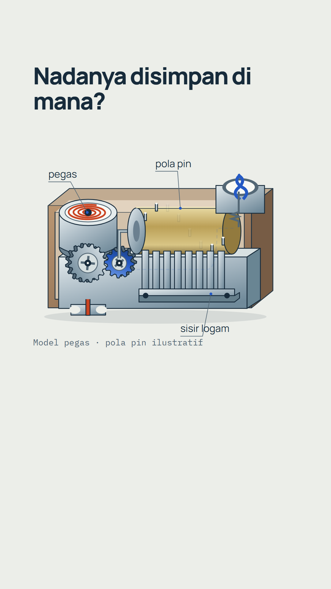
01: Nadanya disimpan di mana?
0.00–6.00s · estimate
Kotak ini bisa memainkan lagu tanpa baterai. Siapa yang menyimpan nadanya?

Kotak ini bisa memainkan lagu tanpa baterai. Siapa yang menyimpan nadanya?
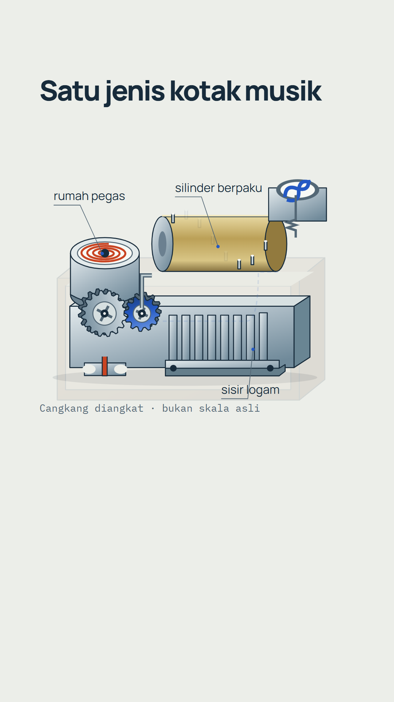
Kita buka kotak musik pegas, dengan silinder berpaku dan pengatur kecepatan jenis gesek.
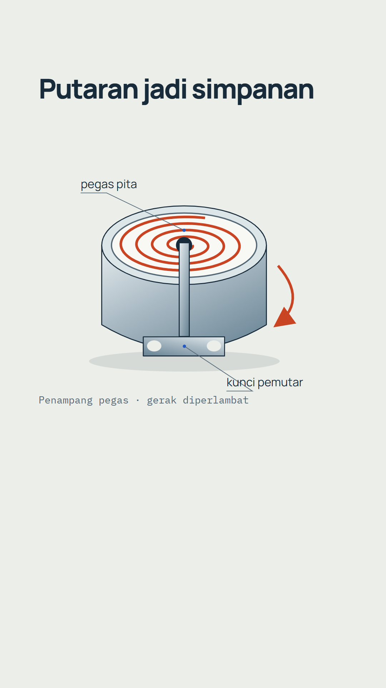
Saat kuncinya diputar, pegas di dalam rumahnya digulung untuk menyimpan energi.
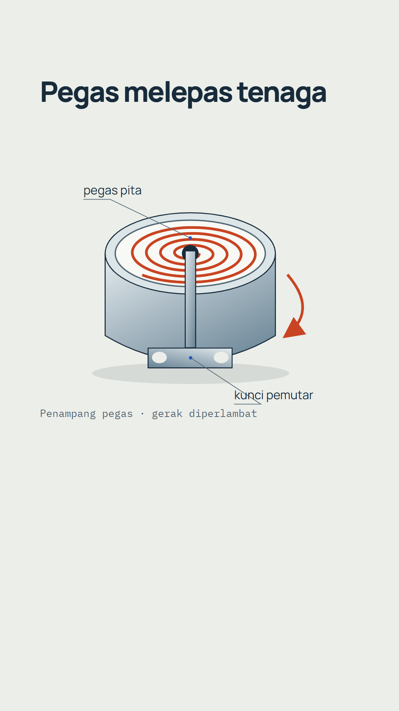
Ketika mekanisme berjalan, pegas mengendur dan menggerakkan roda gigi penggerak.
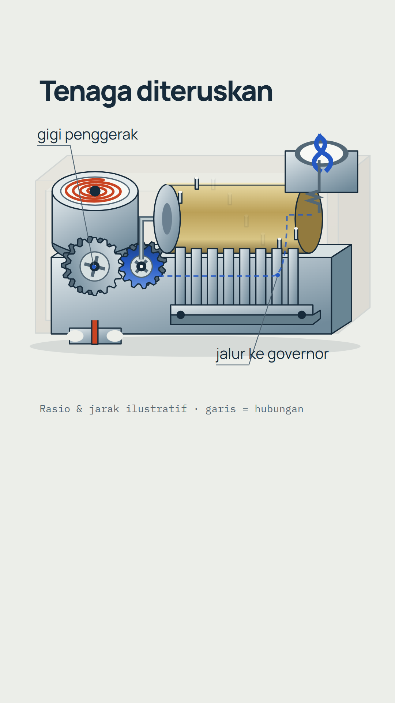
Gigi yang saling bertaut meneruskan putaran, menuju silinder dan rangkaian pengatur kecepatan.
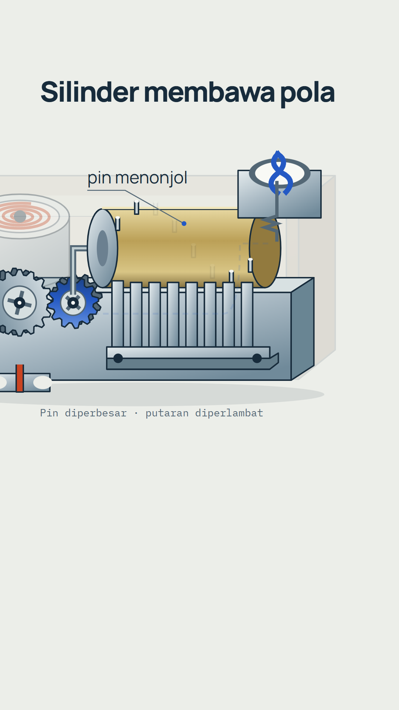
Silinder ini bukan pengeras suara. Di permukaannya, ada pin yang menonjol.
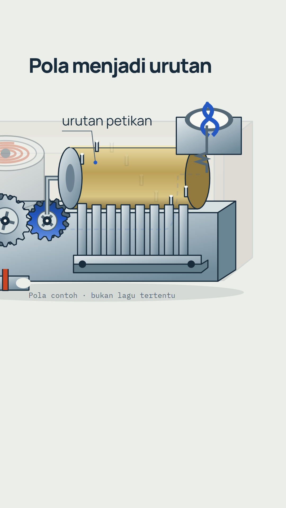
Letak pin menentukan gigi sisir mana yang dipetik, dan kapan petikan itu terjadi.
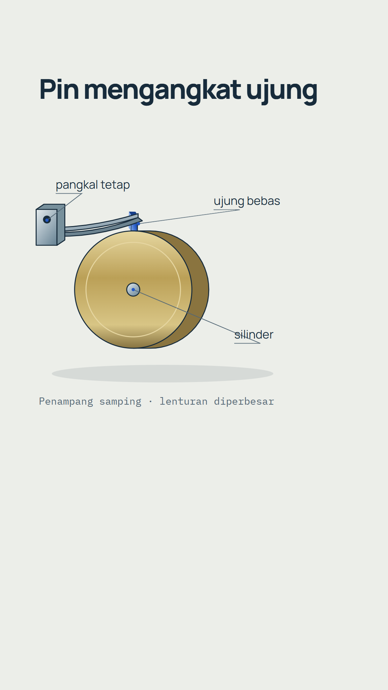
Perhatikan satu pin. Saat mendekat, pin mengangkat ujung gigi sisir logam.
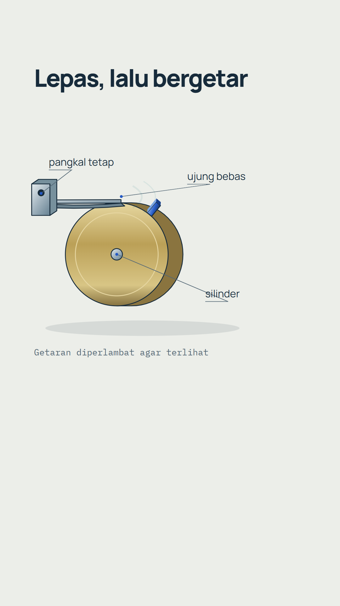
Setelah pin lewat, gigi itu terlepas dan bergetar. Getaran inilah yang menghasilkan nada.
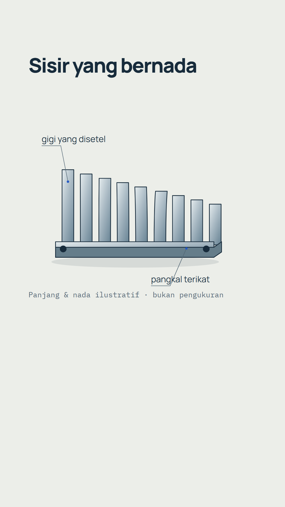
Gigi-gigi sisir disetel untuk nada berbeda. Urutan petikannya membentuk lagu.
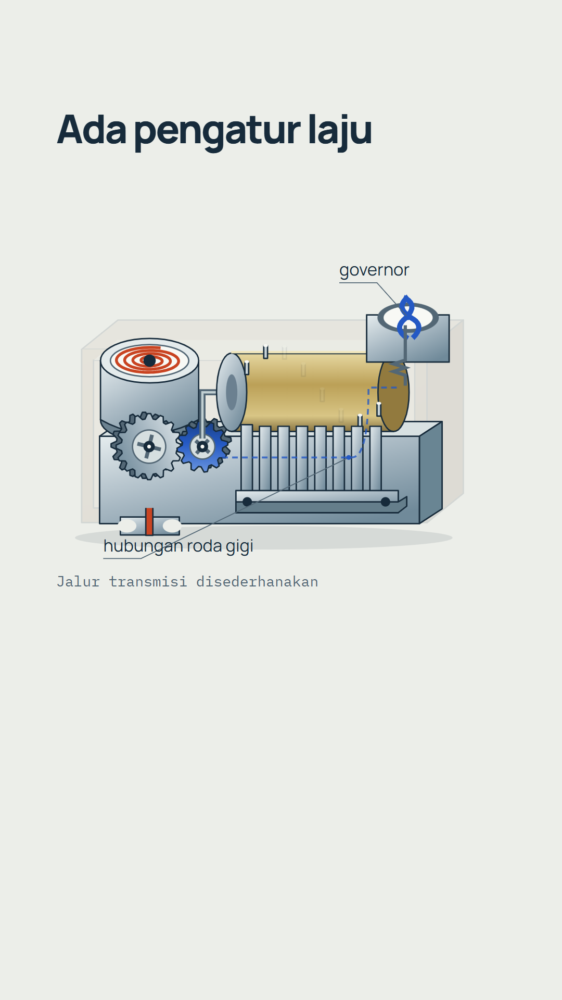
Tapi putaran juga perlu dibatasi. Rangkaian roda gigi ikut memutar governor, pengatur kecepatannya.
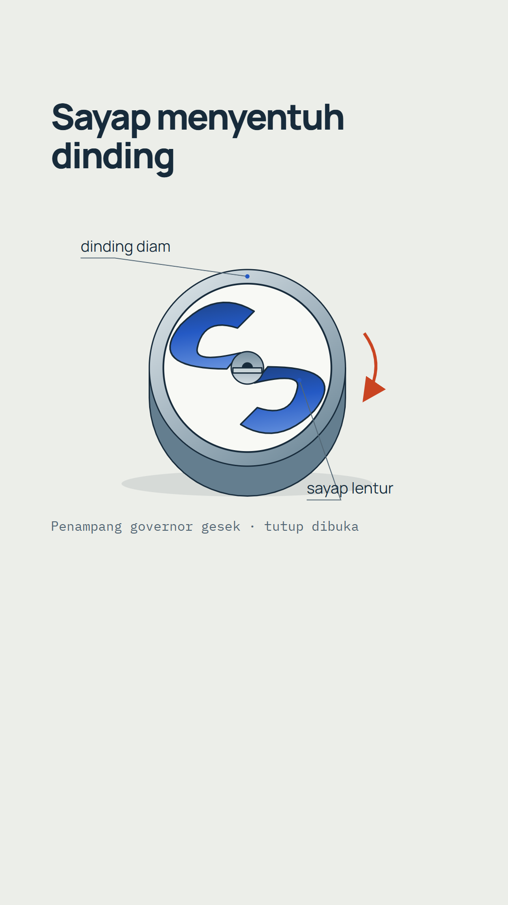
Pada jenis ini, dua sayap lentur mengembang saat berputar, lalu menyentuh dinding cakram.
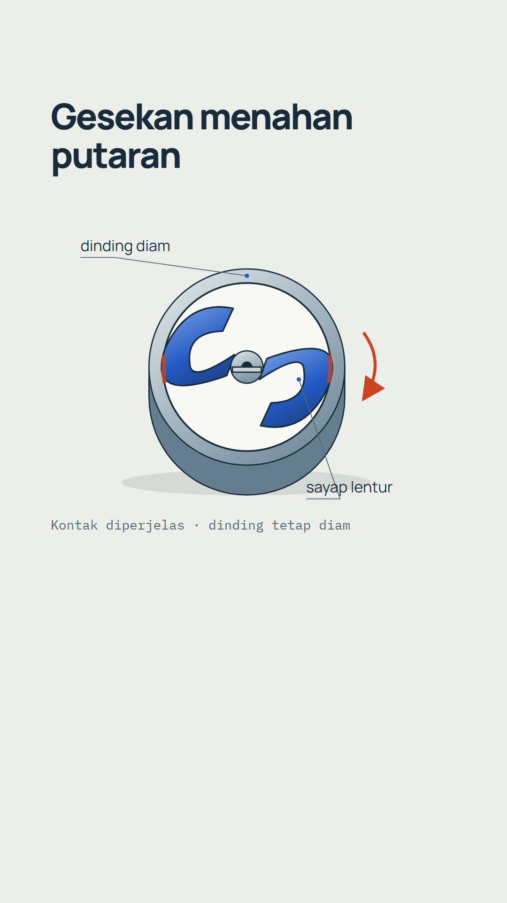
Sentuhan itu menimbulkan gesekan, yang menahan laju mekanisme agar tidak melesat bebas.
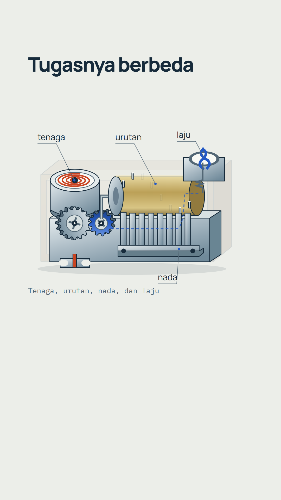
Jadi, governor mengatur laju. Pola pin memilih urutan petikan; sisir menghasilkan nadanya.
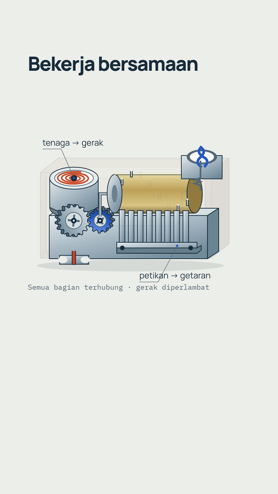
Selama lagu berjalan, pegas, roda gigi, silinder, dan governor bekerja sebagai satu rangkaian.
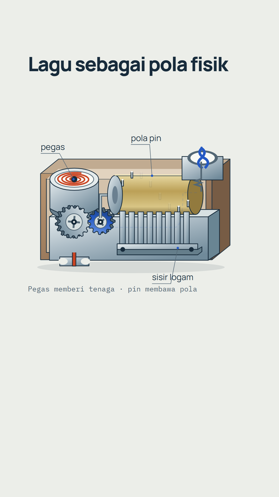
Tenaganya tersimpan di pegas. Lagunya tersusun sebagai pola pin, yang dibaca lewat petikan logam.